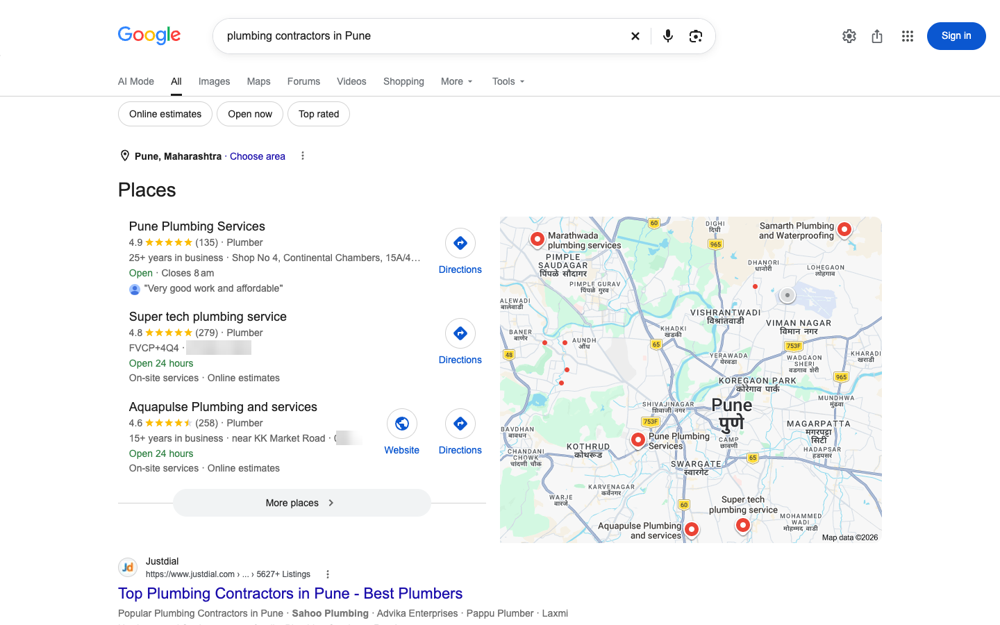
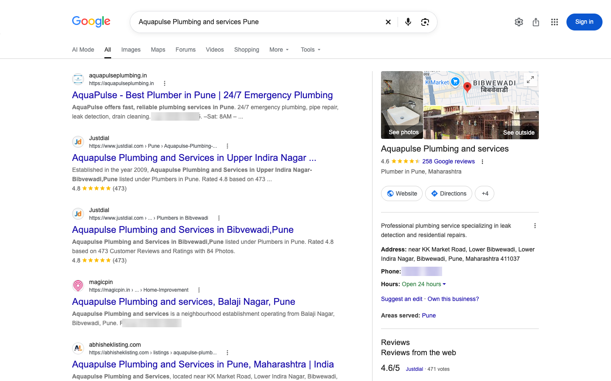
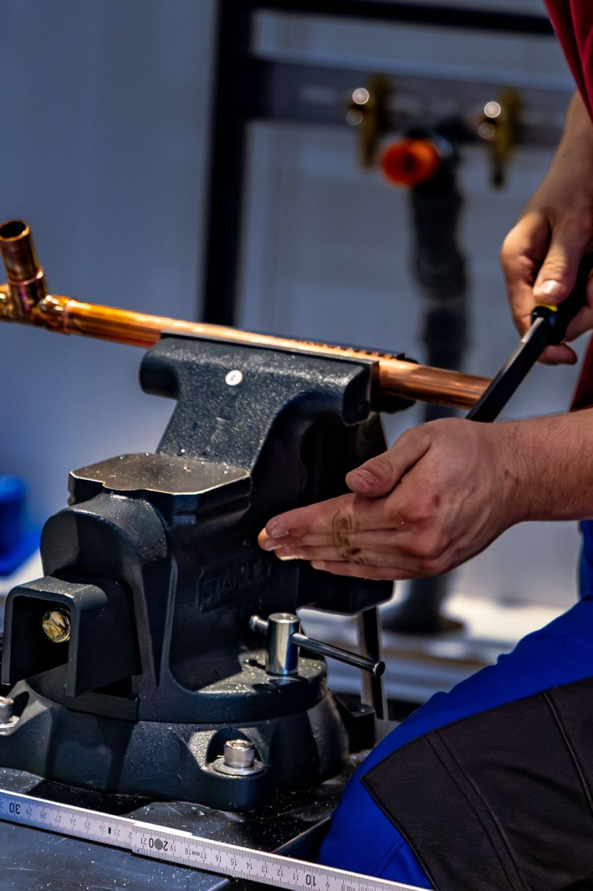
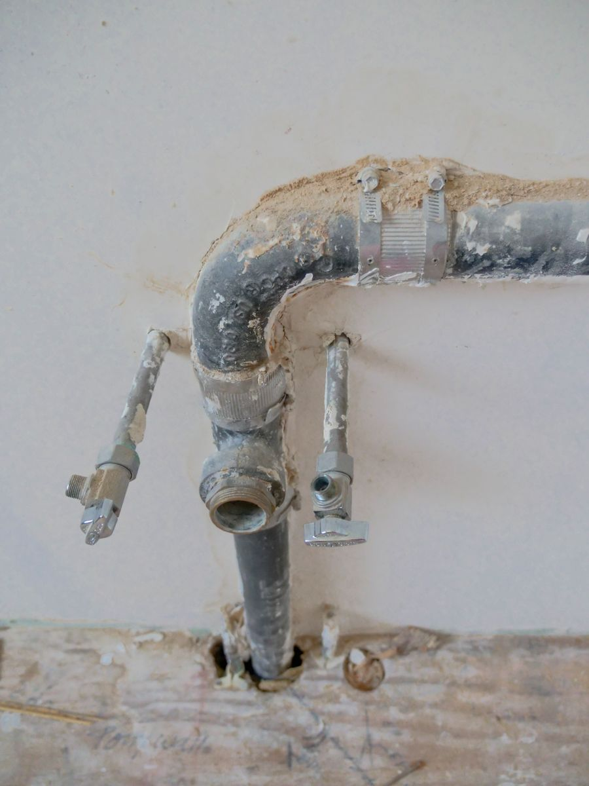
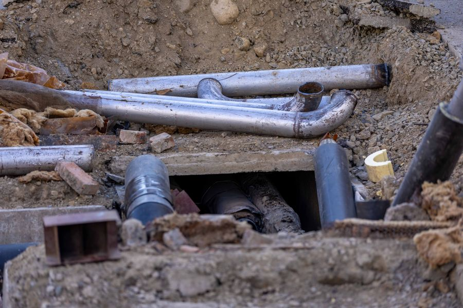
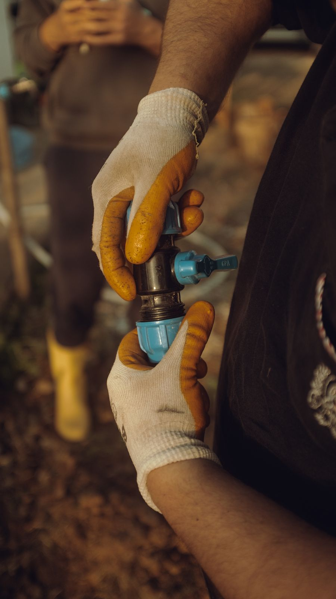

- 1Searches Google for plumbing contractors in Pune. Three firms show up with stars and reviews. Layer 2, Discovery
- 2Opens one listing. Reads the reviews, the hours, the areas served, the photos. Layer 1, Home
- 3Checks the firm's past work on Instagram. Finished bathrooms, concealed pipe work, the team on site. Layer 2, Discovery
- 4Sends a WhatsApp enquiry with the drawings. Gets a reply within the hour. Layer 1, Home
- 5Awards the hospital extension job. The firm finishes on time and asks for a Google review. Layer 4, Relationship
- 6Six months on, the hospital awards the annual maintenance contract. The owner knows which step brought it in. Layers 4 and 5, Relationship and Measurement

Real Google search, signed out. Phone numbers blurred by us

Real Google listing: Aquapulse Plumbing and services, Bibwewadi, Pune. 4.6 stars, 258 reviews
M.N's Plumbing and Renovation Pune's trusted service provider of all kinds of Commercial/Residential Plumbing, Tiling and Renovation services. Since 1998.





A real Pune firm, @mnsplumbingpune: name and bio as published, photos are stand-ins
The enquiry comes on WhatsApp, with the drawings attached. The reply time decides who gets shortlisted
The job is awarded offline, on paper. Every check before it happened online
The maintenance contract: the cheapest job the firm will ever win
A fictional firm we will follow for six months. Any resemblance to a real business is accidental.
- WhereKothrud, Pune
- WhoFounded 2006 by Rajesh Sharma, now run with his son Aditya. 18 staff.
- WorkResidential and small commercial plumbing contracts, maintenance for housing societies, some fittings supply.
- ReputationExcellent word of mouth. Twenty years of it.
- OnlineAlmost nothing. A Google listing someone else created, no photos, two reviews, hours not set. Enquiries come on Rajesh's personal number.